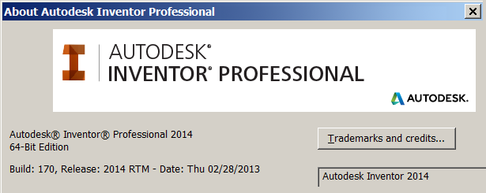
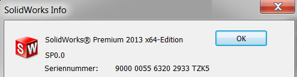

Contact OPEN MIND partner
If you cannot find a solution for your problem in the FAQ list, please contact your OPEN MIND partner. To enable us to deal with your request quickly and efficiently, please provide the following information:
Version numbers
Version number of the operating system
You can obtain the version number of your Windows operating system by doing the following:
-
Right-click the Windows Start icon and then select System. Save the Show basic information about this computer section as a screenshot or
-
enter winver in the input field to the right of the Windows Start icon, start the winver program and save the screenshot.
Version number of the CAD system
Proceed as follows to obtain the version number of your CAD system:
Click → .
Autodesk Inventor
|  |
SolidWorks
|  |
hyperMILL
Proceed as follows to obtain the hyperMILL version number:
-
On the menu bar, click → → .
-
Afterwards, click the Version details... button and save the
verDetails.txtfile.
hyperView /OPEN MIND tool database
Proceed as follows to obtain the version number of hyperVIEW or the OPEN MIND tool database:
Click the question mark on the menu bar and select About hyperView or Information about OPEN MIND Tool Database.
CAD and hvz file
As a preparative measure, please generate a copy of the corresponding CAD file. In case of large job lists: adjust them by deleting the non relevant jobs.
Now back up all relevant 3DF, model, stock and, if necessary, NC files by transferring the job to hyperVIEW. To do this, select the job in the hyperMILL browser and choose the → option on the shortcut menu.
Save the job in hyperVIEW as an archive file ( → ) in *.hvz format. The files are combined into a single zip file. Please provide this file to your OPEN MIND partner together with the CAD
file.
Please note: A model file ( *.OMX) will only be transferred to hyperVIEW if you have assigned the file to the corresponding job list previously in hyperMILL.
To do so, please highlight the job list and choose the Edit job list... entry. Now select the Part data tab in the Job list dialog, activate the Defined option and choose the corresponding model file from the
list. Exit the dialog by clicking OK.

Short problem description
When the problem did occur (action) and what happened exactly? It is also helpful to supplement your description using screenshots (if necessary, also of hyperMILL messages).